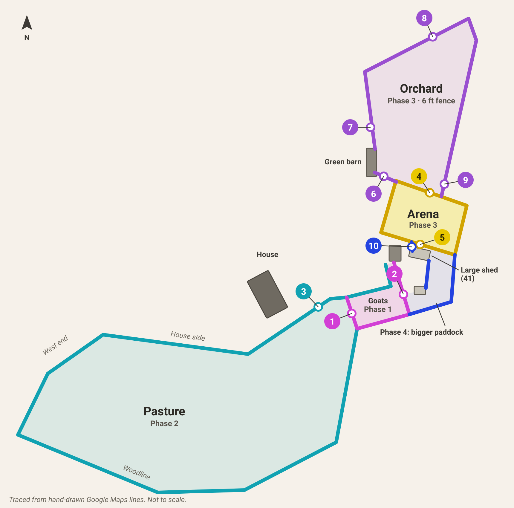
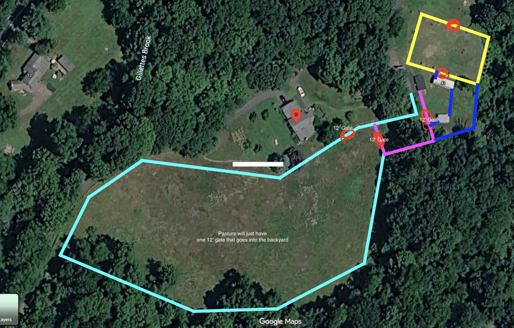
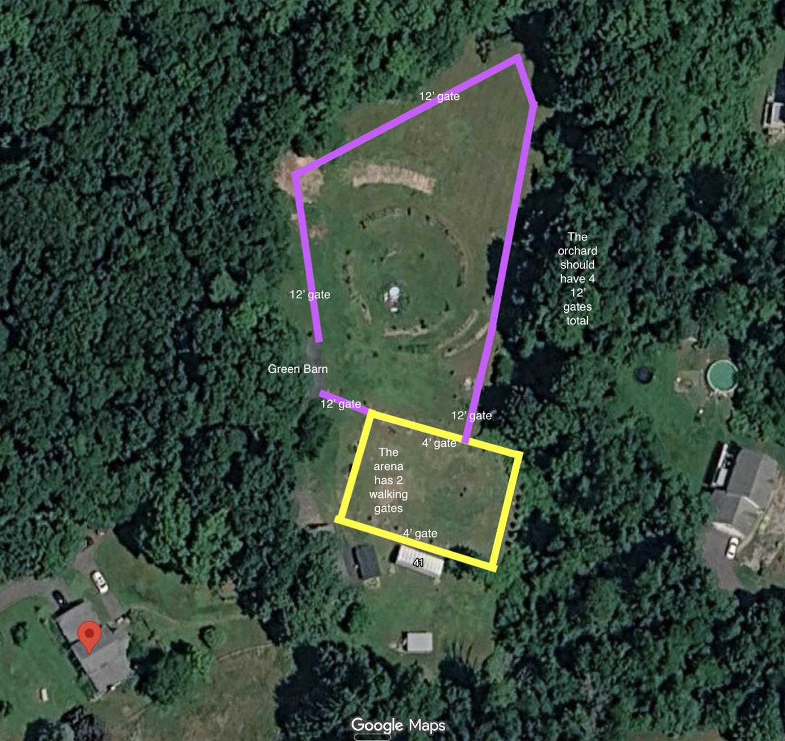

For Robert Tronsky
Mesa Ranch fencing plan
We'd like you to build all four phases of our fencing over time. This page shows the whole plan, so the first two fences are set up for the rest. We're ready to sign phases 1 and 2 now, in one contract.
Phase 1
Goat fence 275 ft, your measurement As soon as possible, before the snowReady to sign
Phase 2
Pasture fence About 1,800–2,000 ft by our map. Needs your measurement Mid-December, weather permittingReady to sign after the re-measure
Phase 3
Arena and orchard Not measured yet LaterQuote later
Phase 4
Bigger goat paddock Not measured yet After the arenaQuote later
The whole plan
Phase 1 goat fence Phase 2 pasture Phase 3 arena Phase 3 orchard Phase 4 bigger paddock

Numbered circles are gates. They match the gate list. The badge color shows the phase. Traced from our hand-drawn map lines, so it isn't to scale. Tap the drawing to open it full size and zoom in.
Phase 1 · Sign now
Goat fence
Start as soon as possible. We'd like it finished before the snow.
- Length
- 275 ft, as you measured it
- Rails
- 4 rails, 2x6
- Posts
- 6x6 square, with tops cut level and caps
- Mesh
- 48″ black no-climb, on the side away from the goats
- Gates
- Two 12 ft black steel mesh gates (1 and 2): one into the pasture and one to the east yard. Hung low enough that goats can't get under where the ground slopes.
- Electric
- Please quote it: one offset wire on the goat side, 12–18″ up. See electric.
- Finish
- Natural wood for now
- What stays for now: the existing north side with hardware cloth, and the existing wooden gate between the barns. The north side gets replaced in phase 2.
- Planning ahead: in phase 4, the paddock grows east from the southeast corner. We'd like that corner built so it can take the new fence later without being reset.
- The goats are on site. We'll need temporary fencing to hold them while you work.
Phase 2 · Sign now
Pasture fence
Mid-December start, weather permitting.
- Where
- The woodline (your 927 ft), plus the house side, the west end and the goat paddock's north side, replacing the old strap-rail fence. That's about 1,800–2,000 ft by our map, so it needs your measurement.
- Rails
- 3 rails, 2x6. The paddock's north side may get 4 to match the paddock; we'd like your advice.
- Posts
- Round on the woodline. 6x6 square on the house side, west end and north side.
- Mesh
- 48″ black no-climb on the outside face. Mesh facing the house is fine.
- Gate
- One 12 ft wooden gate from the backyard (3), to match our existing wooden gates. There are no other pasture gates.
- Caps
- On the square posts you can see from the house and driveway. We'll point them out.
- Electric
- Please quote it: a horse rope on top and a low goat wire. See electric.
- Animals
- Nothing in it now. Later: full-size horses and small goats, sometimes together.
- Clearing
- We'd like a strip outside the woodline fence wide enough to ride a horse on. The riding trail runs outside all our fencing.
- Old fence
- Remove and haul away the old pasture fence.
- Materials
- If possible, deliver everything for phases 1 and 2 up front. We're happy to store the pasture materials here before phase 2 starts.
Phase 3 · Later
Arena and orchard
Arena
- Ties into our existing 10 ft gate at the front of the arena. It's already installed and is the way in for equipment.
- Two 4 ft walk gates (4 and 5): one on the orchard side and one on the large-shed side.
- The fence runs in front of the evergreens, not behind them, to stay off the rocks and rough ground back there.
- In phase 4, the arena's south side becomes the goat paddock's north side, so it needs to hold goats.
Orchard: 6 ft fence and four 12 ft gates
- Entrance (6): between the green barn and the arena's corner. Please put mesh on it to keep the dogs in.
- Barn side (7): on the west side, north of the green barn, set back far enough for a tractor to turn.
- Trail gate (8): on the top edge near the trail entrance, so the tractor can get out to the trail and the pasture.
- Back gate (9): on the east side, just above where the orchard meets the arena, leaving room to drive a tractor behind the orchard.
Your advice
What posts, mesh and gates would you use for a 6 ft orchard fence? What would you suggest for the arena fence?
Phase 4 · Last
Bigger goat paddock
- The paddock grows east from the goat fence's southeast corner, then runs north to the arena's southeast corner. The arena fence becomes its north side.
- The goats get the strip behind the large shed. A walk gate (10) runs from the shed to the arena fence.
- A short line from the large shed down to the small shed closes off the area between the sheds.
- A curve from the small barn to the back corner of the small woodshed, for the look. It isn't drawn yet, so we'll show you on site.
- Temporary fence along the side of the arena until the arena fence is done.
All gates
Ten new gates across all four phases. The numbers match the diagram.
- 12 ft1. Goat paddock into the pasture. Black steel mesh.Phase 1
- 12 ft2. Goat paddock to the east yard. Black steel mesh.Phase 1
- 12 ft3. Backyard into the pasture. Wooden, to match our existing gates.Phase 2
- 4 ft4. Arena walk gate, orchard side.Phase 3
- 4 ft5. Arena walk gate, large-shed side.Phase 3
- 12 ft6. Orchard entrance, green barn to the arena corner. With mesh for the dogs.Phase 3
- 12 ft7. Orchard, west side by the green barn. Room for the tractor to turn.Phase 3
- 12 ft8. Orchard trail gate, top edge.Phase 3
- 12 ft9. Orchard back gate, east side.Phase 3
- Walk10. Large shed to the arena fence.Phase 4
The existing 10 ft arena gate and the existing wooden gate between the barns stay.
Electric wire
We'd like you to quote this separately for phases 1 and 2. It would tie into our existing charger, which already runs a hot wire on the property. Can that charger handle the extra length? Please also bury insulated cable under the gates so the wire stays live across them.
- Goat fence: one offset wire on the goat side, about 12–18″ up.
- Pasture: white horse rope on side-mounted extenders 6–12″ above the top rail, plus a goat wire about 12–18″ up on the pasture side. The extenders go on the side of the posts so the caps still fit.
- Question: horses will be on the mesh side of the goat fence where it borders the pasture. Should that stretch get a horse wire too?
Site notes for every phase
- Call Before You Dig before each phase. We'll mark our own buried lines, like the existing hot wire and any power or water to the barns.
- Trees: the fence goes around trees, not through them. The red maple at the front stays. The small tree in the backyard that's on the fence line can come out. Please check with us before taking out any other tree.
- Riding trail: it runs outside all the fencing, so every outside line needs room for it.
- Tractor access: we'd like gates and corners sized for our tractor to turn.
- Future pool: we may add one near the house someday. We'll show you roughly where before the house-side line is set.
Our original maps
The hand-drawn maps the diagram was traced from. Tap to open full size.

